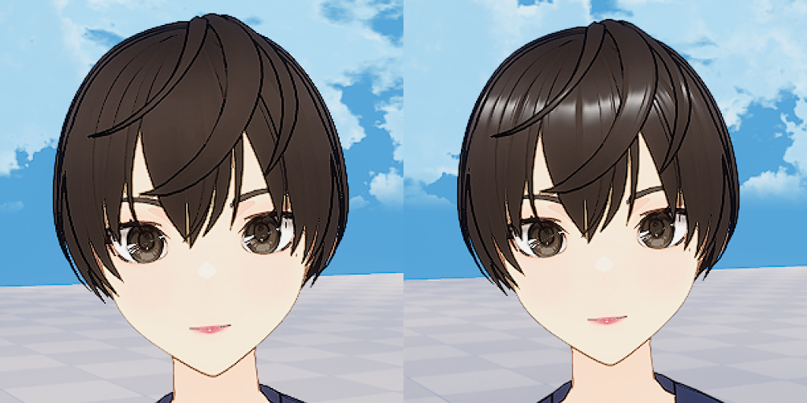
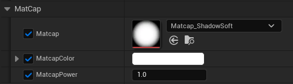

NPR Shading & Look Development
From research to anime-style character look development and lighting adaptation
Cinev Studio · UE5 · Material · Post Process · cinev.com
Problem
During Cinev Studio development, we explored a shift from MetaHuman-based PBR to anime-style characters while keeping PBR environments. The two looks needed to work together. Even textures connected to Emissive appeared duller than intended, making the desired bright character look difficult to achieve.
Solution
When reference implementations were limited, I followed practitioners and developers and tested their approaches. I combined SDF face shadows, outlines, Matcap, and environment controls to develop the NPR prototype into looks used in the product.
Split the approach into Custom Depth + Post Process for in-house and Emissive + Inverted Hull for VRM, creating 4 NPR looks. The core nodes carried over from the prototype are SDF face shadow and Dot Product-based two-tone shading.
The turning point for a brighter character look
The decisive step was inverse tone mapping with FilmToneMapInverse. Precompensating the color for the later tone-mapping stage brought the result closer to the bright anime-style look I wanted. This was the point where I judged the look ready to build on for the product.
| Problem | Change | Assessment |
|---|---|---|
| Dull color even with Emissive | Apply FilmToneMapInverse | Establish a usable bright character look |
Decision: when shading conflicts with the intended mood
With AI controlling cameras and lighting, backlighting in a bright scene could make a character look more threatening than intended. I changed that treatment from two-tone shadows to environment-driven color tones. The decision came from evaluating how the rendered result served the scene’s intended mood.
Result
| Category | Result |
|---|---|
| Rendering Transition | Supported anime-style characters while retaining PBR environments |
| NPR Looks | 4 looks — art team can change styles by swapping Toon Ramps |
| Material Scale | 698 MIs, 1,371 textures |
| Material Separation | In-house (dedicated toon) + VRM (MToon reimplementation) built separately |
| Background Coexistence | PBR backgrounds + NPR characters in the same scene |
| Look Dev | Finalized per-character looks with art team — style changes possible via Toon Ramp swap |

PBR background + NPR character in the same scene
4 Base Materials
In-house and VRM have different material structures, and even within VRM, realistic and non-realistic parts are mixed. So four separate base materials were created.

4 base materials
1. In-house Toon
Dedicated toon material for in-house characters. On top of a structure that separates characters via Custom Depth buffer and renders them in NPR style through Post Process, I developed and maintained features such as SDF face shadow and Matcap reflection.
Global Shadow OFF / ON toggle demo
SDF Face Shadow
Standard NdotL produces unintuitive shadows around the nose and eye sockets. By controlling shadow boundaries with pre-baked distance information in SDF textures, face shadows fall naturally even as the lighting angle changes.
SDF face shadow lighting demo

SDF Shadow Mask texture

SDF texture sample → Light Direction dot → shadow mask output
Matcap Reflection
PBR reflections don't suit NPR environments. I used Matcap textures for view-based reflections on hair highlights, skin sheen, etc. Turned out it could fake rim lighting too, so I built Matcap Painter to make those textures faster.
Matcap reflection demo


2. VRM Toon
Restructured parameter input names based on the in-house toon material to conform to MToon conventions. Ensured MToon textures and flags are automatically connected upon VRM import. Outline uses the same Post Process approach as the in-house material.

PP outline mask processing — unnecessary line removal + Material/Blueprint implementation
Angel Ring Matcap
Applied Matcap to the specular map to create a natural sheen effect that shifts with camera direction. Hair highlights like angel rings are achieved with a single ShadowSoft Matcap texture, and Matcap parameters are exposed on the material instance so the art team can easily adjust per-character look dev.

Angel Ring Matcap Before / After

Matcap_ShadowSoft parameter settings
3. VRM PBR
Lightweight version of the VRM4U plugin's PBR material. Renders realistic parts such as skin, irises, and accessories based on a default SSS Profile. Like Zo Toon, the focus was on matching the tone with existing in-house characters.

4. VRM Zo Toon
The in-house post-process NPR approach made mixed PBR and NPR parts within one character difficult to handle. I developed a separate material using Emissive-based shading and inverted-hull outlines, matching its tone to the in-house characters.

Zo Toon material node graph — Emissive-based toon shading

Zo Toon(Inverted Hull) vs VRM Toon(Post Process) outline comparison
Zo Toon + PBR non-realistic/realistic combination showcase

PBR realistic part + Toon non-realistic part mixed result
| Material | Base Pass | Samplers |
|---|---|---|
| In-house Toon | 433 inst | 7 / 16 |
| VRM Toon | 369 inst | 4 / 16 |
| Zo Toon | 226 inst | 3 / 16 |
Recorded Base Pass instruction counts: 433 → 226. This is a material statistic, not a GPU frame-time measurement.
UDS / ToD Integration Test
A nine-frame record comparing character and environment looks across lighting and Time of Day settings. I checked the results in scene context as well as under individual lighting setups.